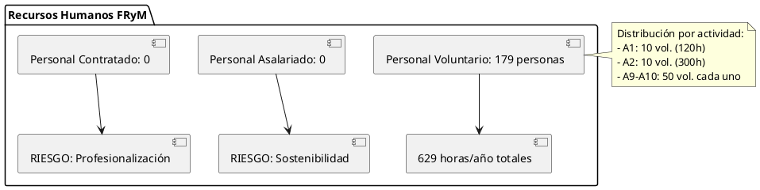
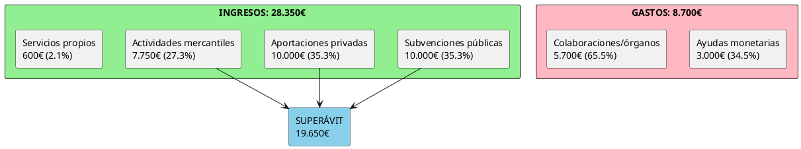
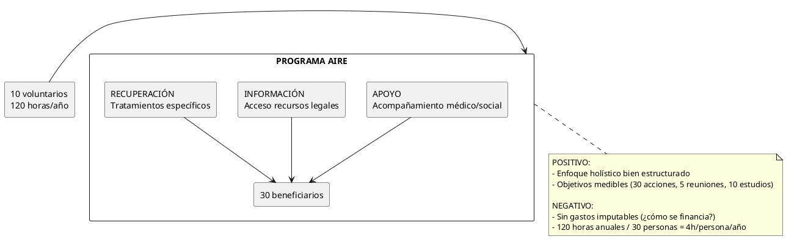
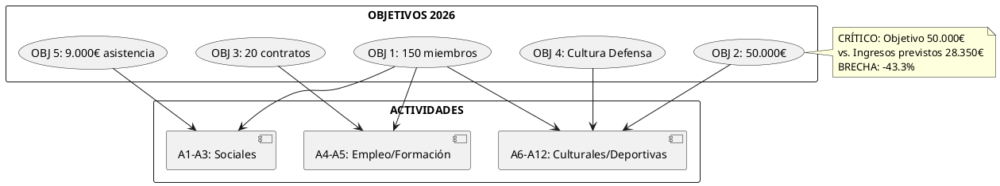

Análisis Crítico del Plan de Actuación 2026
Fundación Roble y Machete (Registro 2744JUS)
Table of Contents
1. Referencias Documentales
- Documento 1: Plan de Actuación 2026 (Ref: 728088093, Fecha: 19/12/2025)
- Documento 2: Objetivos Fundación 2026 (Fecha: 25/12/2025)
- Fundación: Roble y Machete, Registro 2744JUS
- Ámbito: Comunidad Valenciana y Región de Murcia
- Ejercicio: 01/01/2026 - 31/12/2026
2. 1. Análisis de Estructura Organizativa
2.1. 1.1 Modelo de Recursos Humanos
La fundación opera exclusivamente con voluntariado, sin personal asalariado:

2.2. 1.2 Aspectos Positivos
- Compromiso social genuino: Modelo 100% voluntario demuestra vocación auténtica
- Diversificación de actividades: 12 programas distintos cubren múltiples necesidades
- Enfoque integral: Atención médica, psicológica, social y laboral
- Alianzas estratégicas: Convenios con Universidad de Alicante, ISEN Cartagena, instituciones públicas
2.3. 1.3 Aspectos Críticos
- RIESGO DE SOSTENIBILIDAD OPERATIVA
- Dependencia total de voluntarios (burnout potencial)
- 629 horas anuales totales para gestionar 1.250 beneficiarios potenciales
- Ratio: 0.5 horas/año por beneficiario (INSUFICIENTE)
- FALTA DE PROFESIONALIZACIÓN
- Actividades sanitarias/psicológicas requieren profesionales titulados
- No hay mención de seguros de responsabilidad civil
- Ausencia de protocolos de calidad visibles
- AMBIGÜEDAD EN BENEFICIARIOS
- A2 declara 1.100 beneficiarios pero marca "NÚMERO INDETERMINADO"
- Contradicción entre datos cuantitativos y cualitativos
3. 2. Análisis Económico-Financiero
3.1. 2.1 Estructura de Ingresos y Gastos

3.2. 2.2 Matriz de Viabilidad Financiera
| Indicador | Valor | Evaluación | Observaciones |
|---|---|---|---|
| Ingresos totales | 28.350€ | BAJO | Insuficiente para estructura estable |
| Dependencia subvenciones | 70.6% | CRÍTICO | Riesgo ante cambios políticos |
| Ratio gasto/ingreso | 30.7% | ÓPTIMO | Pero ¿dónde va el 69.3% restante? |
| Diversificación ingresos | 4 fuentes | ACEPTABLE | Equilibrio público-privado |
| Gasto en beneficiarios | 3.000€ | MUY BAJO | 2.4€/beneficiario (A1: 30 personas) |
| Objetivo económico 2026 | 50.000€ | AMBICIOSO | +76% respecto a ingresos previstos |
3.3. 2.3 Análisis Crítico Económico
ALERTAS IMPORTANTES:
- OPACIDAD EN DESTINO DE FONDOS
- Superávit previsto: 19.650€ (69.3% ingresos)
- No hay plan explícito para este excedente
- ¿Reservas? ¿Inversiones futuras? ¿Capitalización?
- INCOHERENCIA GASTOS/OBJETIVOS
- Objetivo 5 (acción social): "asistencia de 9.000€"
- Presupuesto real ayudas: 3.000€
- DESFASE: -6.000€ (67% inferior)
- RIESGO ACTIVIDADES MERCANTILES
- 7 actividades mercantiles (conciertos, conferencias, deportes)
- Ingresos previstos: 7.750€
- Gastos asociados: 5.700€
- Margen: 26.5% (aceptable pero sin colchón de error)
4. 3. Evaluación de Actividades
4.1. 3.1 Programa AIRE (A1) - FORTALEZA

Evaluación: Bien conceptualizado, críticamente subfinanciado
4.2. 3.2 Actividades Culturales (A6-A8, A11-A12) - RIESGO MEDIO
Positivos:
- Contribuyen a visibilidad institucional
- Generan ingresos complementarios
- Cumplen objetivo estatutario (cultura defensa)
Negativos:
- 5 eventos culturales diferentes: dispersión de esfuerzos
- Previsión optimista: 300 entradas/concierto sin datos históricos
- Dos conciertos idénticos (Alicante/Alcoy): ¿saturación de mercado?
4.3. 3.3 Matriz de Impacto vs. Recursos
| Actividad | Beneficiarios | Voluntarios | Horas/año | Impacto | Eficiencia |
|---|---|---|---|---|---|
| A1 (AIRE) | 30 | 10 | 120 | ALTO | MEDIA |
| A2 (Sanitaria) | 1.100 | 10 | 300 | ALTO | BAJA |
| A4 (Empleo) | 100 | 2 | 30 | ALTO | ALTA |
| A5 (Formación) | 20 | 2 | 120 | MEDIO | ALTA |
| A6-A12 (Cult.) | variable | 115 | 84 | MEDIO | MEDIA |
5. 4. Análisis de Objetivos y KPIs
5.1. 4.1 Coherencia Objetivos-Actividades

5.2. 4.2 Evaluación de Indicadores
OBJETIVO 1 (150 miembros):
- ✓ Actividades diversificadas para captación
- ✗ No hay datos de membresía actual (¿crecimiento desde qué base?)
- ✗ Ausente: estrategia de retención
OBJETIVO 2 (50.000€):
- ✗ INCOHERENTE: Ingresos previstos 28.350€
- ✗ Incremento trimestral propuesto: 14.000€ vs. 28.350€ total
- ✗ No hay plan específico para cerrar brecha
OBJETIVO 3 (20 contratos):
- ✓ Actividad A4 bien focalizada
- ✓ Indicador realista (200 afiliados → 20 contratados = 10%)
- ✗ Falta: convenios empresariales firmados actualmente
OBJETIVO 4 (Cultura Defensa):
- ✓ Múltiples actividades alineadas
- ✓ Convenios universitarios existentes
- ✗ Dispersión: ¿mejor concentrar esfuerzos?
OBJETIVO 5 (9.000€ asistencia):
- ✗ CRÍTICO: Presupuesto 3.000€, objetivo 9.000€
- ✗ Contradicción fundamental en planificación
6. 5. Estrategia de Comunicación y RRSS
6.1. 5.1 Oportunidades para RRSS
CONTENIDOS PUBLICABLES (Alto potencial):
- Historias de Impacto Humano
- Testimonios anónimos beneficiarios Programa AIRE
- Casos de éxito en inserción laboral (A4)
- "De las operaciones especiales al mundo civil"
- Eventos Culturales
- Promoción conciertos (A6, A12): carteles, previas, directos
- Exposiciones fotográficas (A11): contenido visual de calidad
- Conferencias (A7): clips educativos, infografías
- Contenido Educativo
- Cultura de Defensa: vídeos cortos historia militar
- Valores de las Fuerzas Armadas: storytelling emocional
- Colaboraciones universitarias: legitimidad académica
- Eventos Deportivos
- Raid Solidario "Viriato" (A9): contenido dinámico, retos
- Duatlón Solidario (A10): cobertura en tiempo real, comunidad
CONTENIDOS NO PUBLICABLES (Riesgos):
- Datos Personales Sensibles
- Información médica/psicológica de beneficiarios
- Situaciones de vulnerabilidad específicas
- Detalles de viudas/huérfanos (protección menores)
- Información Operativa Militar
- Datos actuales de Unidades de Operaciones Especiales
- Identidades de personal activo sin consentimiento
- Procedimientos tácticos o de seguridad
- Datos Financieros Detallados
- Desglose individual de ayudas monetarias
- Información nominal de donantes privados
- Contratos específicos con empresas colaboradoras
6.2. 5.2 Estrategia RRSS Recomendada
PLATAFORMAS PRIORITARIAS:
| Plataforma | Objetivo | Contenido Principal | Frecuencia |
|---|---|---|---|
| Inserción laboral | Ofertas empleo, casos éxito, empresas | 3x semana | |
| Comunidad amplia | Eventos, testimonios, cultura defensa | 5x semana | |
| Captación jóvenes | Visual eventos deportivos/culturales | Diario | |
| Twitter/X | Institucional | Convenios, colaboraciones, noticias | 2x semana |
| YouTube | Contenido evergreen | Conferencias completas, documentales | 2x mes |
CALENDARIO DE CONTENIDOS 2026:
- Enero-Marzo: Lanzamiento campaña "150 Miembros"
- Abril-Junio: Cobertura exposiciones fotográficas
- Julio-Septiembre: Campaña inserción laboral + eventos deportivos
- Octubre-Diciembre: Balance anual + captación donaciones
6.3. 5.3 Riesgos Reputacionales
- TRANSPARENCIA FINANCIERA
- Publicar memoria económica anual (obligación legal)
- Clarificar destino del 69.3% superávit previsto
- PROFESIONALIDAD ASISTENCIAL
- Comunicar titulaciones de voluntarios en áreas sanitarias
- Protocolos de confidencialidad y ética
- COHERENCIA DISCURSO
- Resolver contradicciones entre objetivos y presupuesto
- Evitar promesas incumplibles en captación de fondos
7. 6. Recomendaciones Estratégicas
7.1. 6.1 Corto Plazo (1-6 meses)
- CRÍTICO: Resolver incoherencias presupuestarias
- Ajustar OBJ 2 a realidad (28.350€) o detallar plan para 50.000€
- Explicar destino del superávit de 19.650€
- Alinear OBJ 5 (9.000€) con presupuesto real (3.000€)
- Profesionalizar áreas críticas
- Contratar 1 psicólogo/trabajador social a tiempo parcial
- Establecer seguros de responsabilidad civil
- Protocolos escritos para Programa AIRE
- Lanzar estrategia digital
- Crear perfiles institucionales en RRSS principales
- Contratar community manager voluntario/becario
- Calendario editorial primer trimestre
7.2. 6.2 Medio Plazo (6-12 meses)
- Concentrar esfuerzos culturales
- Evaluar: ¿2 conciertos o 1 de mayor impacto?
- Fusionar actividades similares (eficiencia recursos)
- Consolidar alianzas empresariales
- Formalizar 10 convenios empleo (A4)
- Base de datos CRM beneficiarios/empresas
- Transparencia activa
- Publicar informes trimestrales en web
- Memoria de impacto social 2026
7.3. 6.3 Largo Plazo (2027+)
- Modelo híbrido profesional-voluntario
- Plantilla mínima: 2-3 profesionales
- Voluntarios para ejecución actividades puntuales
- Diversificación financiera
- Reducir dependencia subvenciones al 50%
- Desarrollar programa "Empresas Solidarias MOE"
- Crowdfunding para proyectos específicos
- Escalabilidad
- Replicar modelo en otras provincias
- Federación con fundaciones similares
8. 7. Conclusiones
8.1. 7.1 Fortalezas Destacadas
- Misión social clara y necesaria (colectivo militar vulnerable)
- Diversificación de actividades bien conceptualizada
- Alianzas estratégicas con instituciones de prestigio
- Compromiso genuino del voluntariado
8.2. 7.2 Debilidades Críticas
- INCOHERENCIAS PRESUPUESTARIAS GRAVES: objetivos vs. recursos
- Dependencia total de voluntariado: insostenible a medio plazo
- Falta de profesionalización en áreas sensibles (salud mental)
- Opacidad en gestión del superávit económico
8.3. 7.3 Viabilidad Global
DIAGNÓSTICO: La Fundación Roble y Machete presenta un proyecto NOBLE pero FRÁGIL.
- Viabilidad social: ALTA (necesidad real, beneficiarios identificados)
- Viabilidad operativa: MEDIA-BAJA (recursos humanos insuficientes)
- Viabilidad económica: MEDIA (ingresos previstos vs. gastos aceptable, pero incoherente con objetivos declarados)
- Viabilidad reputacional: MEDIA (riesgo por falta de transparencia)
8.4. 7.4 Recomendación Final
La fundación debe priorizar CONSOLIDACIÓN sobre EXPANSIÓN en 2026:
- Resolver contradicciones documentales antes de ejecutar
- Profesionalizar mínimamente la estructura (1-2 contrataciones)
- Concentrar esfuerzos en 2-3 actividades de alto impacto
- Implementar transparencia radical (RRSS, informes públicos)
POTENCIAL DE RRSS: ALTO, pero requiere estrategia coherente y recursos dedicados. El contenido está, falta la ejecución profesional.
La mayor amenaza para esta fundación no es la falta de recursos, sino la brecha entre ambición y capacidad operativa real.
— Documento generado el 16/01/2026 por análisis experto independiente